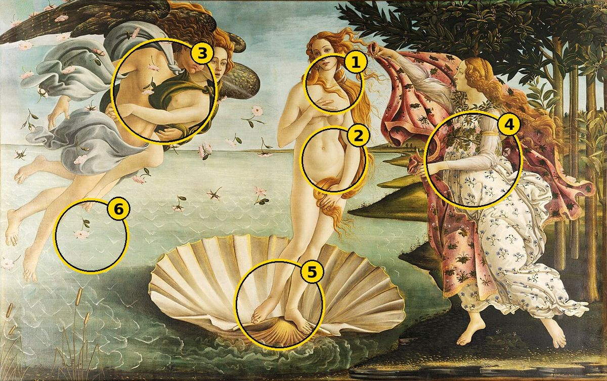

Hidden in the Frame · Uffizi Gallery, Florence
The Birth of Venus
Sandro Botticelli · c. 1485 · Tempera on canvas · Room 10–14

The story
According to ancient myth, Venus was born from the foam of the sea and carried by the wind to the shore of Cyprus. Botticelli paints exactly this moment: the goddess arrives in our world. For Florence this was unheard of – a large, naked, pagan body, not hidden but at the centre. When the preacher Savonarola later stirred up Florence, Botticelli is said to have burned some of his pagan paintings. This one survived.
Details to look for
- Her neck is too long, her left shoulder droops, her weight is so off-balance she would fall over. Botticelli knew that. He did not want a realistic body but an apparition – too beautiful to be fully of this world. Look at her face: she does not look triumphant, almost melancholic, as if she senses what the world will do with her.
- The pose – one hand over her breast, one over her lap, with her own hair – comes from ancient Venus statues. She is naked and modest at once: divinely innocent, yet already about to cover herself.
- Zephyr and Aura blow her ashore, tightly entwined – this is physical, stormy love. Roses, the flower of Venus, fall around her. In the light, hair and roses gleam golden: Botticelli applied real gold.
- A Hora, goddess of spring, hurries over with a cloak full of flowers to cover the naked goddess. Heavenly love is dressed at the very moment it steps onto earth.
- In antiquity the shell was a symbol of birth and fertility. Venus does not stand in the water but almost floats on it – she is already here before she has fully arrived.
- The waves are drawn like little Vs, almost an ornament. The sea is not real nature but a stage. Legend says the beautiful Simonetta Vespucci was the model – she died young, at 22.
What it says
Beauty comes into the world – and beauty is a path to the divine. But the world that receives her wants to cover her at once.
Open the full guide – zoom, audio guide, German & Japanese →